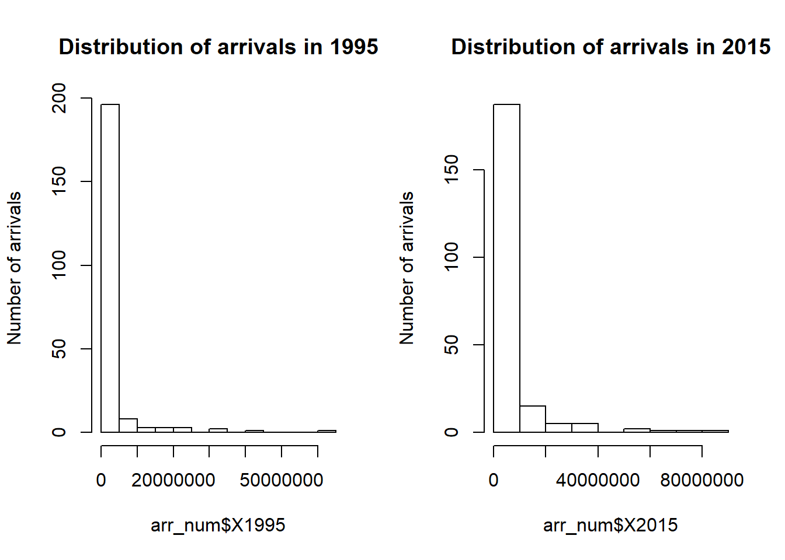
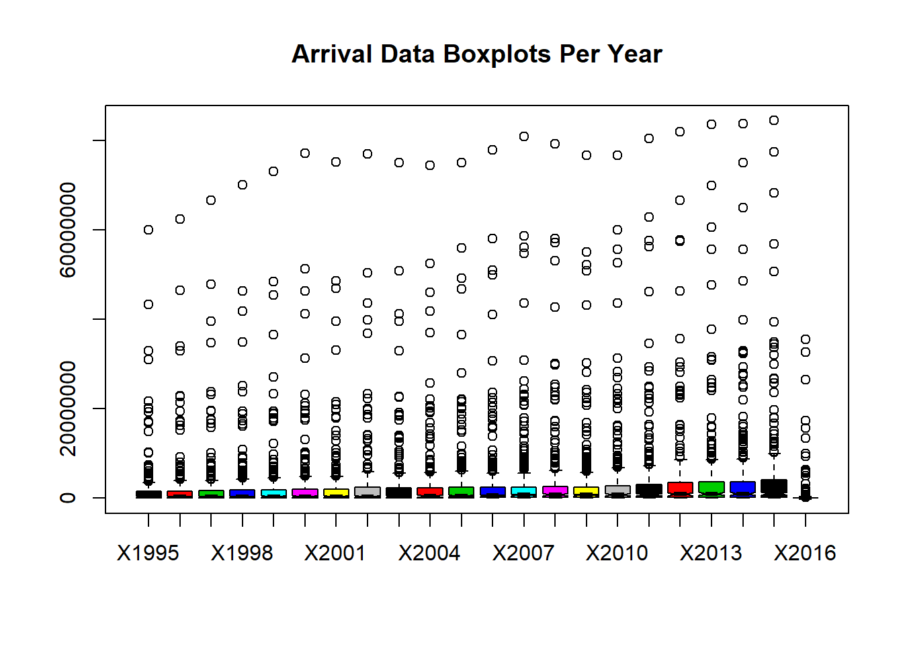
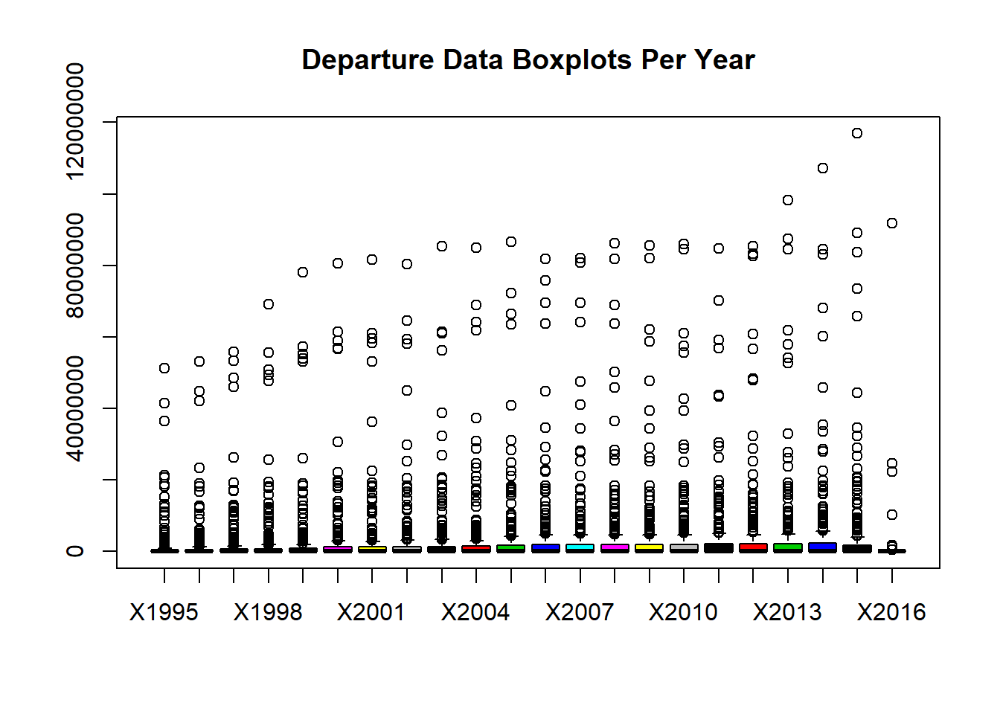
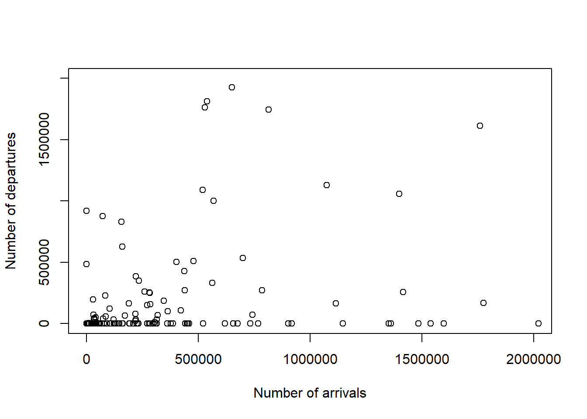
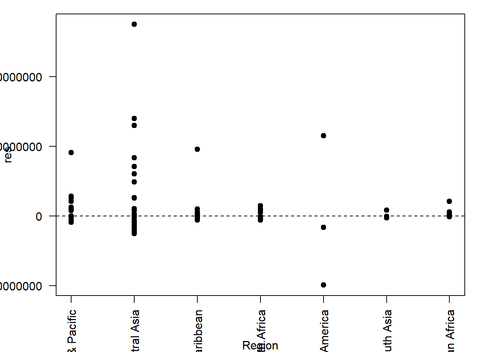

World Tourism Arrival and Departure Dataset Analysis
February 2018
Introduction
In 2017, I was able to travel a lot around the world. Going to some of the most visited cities in the world including Paris, Rome, Singapore, Bangkok and Hong Kong. This made me curious to see how tourism has evolved with time and which countries benefit the most from this global industry. As I have previously worked with D3.js to visualize world data, I thought this would be the perfect continuation to my data science adventure. I decided to write my code and analysis in R Markdown so that I can practice my data presentation skills. All works are hosted on my personal website and Github account.
Github Link: https://github.com/archidisign/Data-Visualization/tree/master/D3/Tourism-Map
Interactive D3 Visualization Link: https://archidisign.github.io/projects.html
Understanding the Dataset
We have the dataset for both the arrival and departure numbers per year of each country. For this project, the comparison of the two datasets is a priority as they bring out very different, but important information. In the future, it would be interesting to see how we can visualize the two together. The dataset was prepared by the World Development Indicators and I have copied their methodology/definition on the README of this project.
Hypothesis and Assumptions
From experience, I am expecting countries in Europe like France and Italy to get the most arrival traction. Resort countries like Thailand and Cubo should also get a fair number of arrivals as they are popular choice for a relaxing vacation. As for departure, I am expecting Western countries like USA, UK and Canada to have the highest number of tourists going abroad over time. Furthermore, with the economic boom Asian countries received in the last decade, I would expect China’s new upper-middle class to contribute significantly to the tourism industry.
Data Cleaning
Within the csv file, each row did not just represent a different country. Instead, aggregation by regions and total were also present. Hence, a first data cleaning was done in EXCEL to filter these rows out from the dataset. Furthermore, we needed to do different vlookup for the data analysis such that the various files loaded can be represented inside one big csv/dataframe.
From there, the newly defined csv files are loaded into R.Some countries have missing data. If the dataset has a nan value, it is replaced by a 0. Furthermore, the last 3 columns are factors, not numerical values. Hence, in R, we want to exclude these from the initial part of our analysis (when we want to visualize histograms, find max/min, etc). Finally, the rownames are defined as the country names. This work is repeated twice, for both arrival and departure dataset.
#Define dataframe for arrival
arrival <- read.csv('./data clean/arrivals_R.csv')
arrival[is.na(arrival)]<-0
arr_num <- arrival[, -24:-26]
rownames(arr_num) <- arr_num[,1]
arr_num[,1] <-NULL
#Define dataframe for departure
departure <- read.csv('./data clean/departures_R.csv')
departure[is.na(departure)]<-0
dep_num <- departure[, -24:-26]
rownames(dep_num) <- dep_num[,1]
dep_num[,1] <-NULLData Exploration
Below are some of the initial data visualization done to better visualize and understand the data at hand. In Data Science, this stage is called the Data Exploration. We are not sure in which direction to go with the project and visualizing the data in different ways allows us to know what to do next.
Find Max and Min
#MAXIMUM for Arrival
idx1 <- which(arr_num==max(arr_num), arr.ind = TRUE)
print(c(rownames(arr_num)[idx1[1]], colnames(arr_num)[idx1[2]], arr_num[idx1]))## [1] "FRA" "X2015" "84452000"#rbind(rownames(arr_num), colnames(arr_num)[apply(arr_num,1,which.max)])
#MINIMUM for Arrival
idx2 <- which(arr_num == min(arr_num[arr_num>0]), arr.ind = TRUE)
print(c(rownames(arr_num)[idx2[1]], colnames(arr_num)[idx2[2]], arr_num[idx2]))## [1] "TJK" "X1996" "700"#MAXIMUM for Departure
idx1 <- which(dep_num==max(dep_num), arr.ind = TRUE)
print(c(rownames(dep_num)[idx1[1]], colnames(dep_num)[idx1[2]], dep_num[idx1]))## [1] "CHN" "X2015" "116886000"#MINIMUM for Departure
idx2 <- which(dep_num == min(dep_num[dep_num>0]), arr.ind = TRUE)
print(c(rownames(dep_num)[idx2[1]], colnames(dep_num)[idx2[2]], dep_num[idx2]))## [1] "TUV" "X1998" "1900"From the above, we see that France is the most popular country to visit, having 84,452,000 arrivals in 2015. Tajikistan, an Europe & Central Asia Lower middle income country, is the least visited. Its smallest number was in 1996 when it received around 700 arrivals. Although uncertain yet, we may assume that overall, the number of both arrival and departure is increasing with years.
Histogram and Data Distribution
options("scipen"=100, "digits"=4)
par(mfrow=c(1,2))
hist(arr_num$X1995, main='Distribution of arrivals in 1995', ylab='Number of arrivals')
hist(arr_num$X2015, main='Distribution of arrivals in 2015', ylab='Number of arrivals')
options("scipen"=100, "digits"=4)
par(mfrow=c(1,2))
hist(dep_num$X1995, main='Distribution of departures in 1995', ylab='Number of departures')
hist(dep_num$X2015, main='Distribution of departures in 2015', ylab='Number of departures') This shows us that the data is right skewed with only a few countries reaching the 20 millions count. It also seems to be unreasonable to do a prediction model based on a standard normal distribution. Even exponential and gamma distribution may be hard to tune onto these datasets.
This shows us that the data is right skewed with only a few countries reaching the 20 millions count. It also seems to be unreasonable to do a prediction model based on a standard normal distribution. Even exponential and gamma distribution may be hard to tune onto these datasets.
World Map Visualization
Time series
https://archidisign.github.io/tourism-map/time_series.html ## Heatmap As there are 217 countries in our dataset and it makes the analytics extremely difficult, I have decided to only focus on the top 20 most active countries (20 highest arrival or departure rate respectively). Look at all time max and min for -> reason? year event?
library("RColorBrewer")## Warning: package 'RColorBrewer' was built under R version 3.3.2arr_temp <- arr_num
arr_temp$total <- rowSums(arr_temp)
arr_temp <- head(arr_temp[order(arr_temp$total, decreasing= T),], n = 20)
arrival_matrix <- data.matrix(arr_temp)
arrival_heat <- heatmap(arrival_matrix, Rowv=NA, Colv=NA, col = brewer.pal(9, "Blues"), scale="column", margins=c(5,10))
dep_temp <- dep_num
dep_temp$total <- rowSums(dep_temp)
dep_temp <- head(dep_temp[order(dep_temp$total, decreasing= T),], n = 20)
departure_matrix <- data.matrix(dep_temp)
departure_heat <- heatmap(departure_matrix, Rowv=NA, Colv=NA, col = brewer.pal(9, "Oranges"), scale="column", margins=c(5,10))
Boxplot Per Year
boxplot(arr_num, main = "Arrival Data Boxplots Per Year", notch = TRUE, col = 1:20)
boxplot(dep_num, main = "Departure Data Boxplots Per Year", notch = FALSE, col = 1:20)
Correlation between arrival vs departure
x <- arrival$X1995
y <- departure$X1995
plot(x, y, xlab='Number of arrivals', ylab='Number of departures', xlim=c(0, 2000000), ylim=c(0, 2000000))
x <- arrival$X2015
y <- departure$X2015
plot(x, y, xlab='Number of arrivals', ylab='Number of departures', xlim=c(0, 2000000), ylim=c(0, 2000000))
Linear Regression relation
Correlation between regions/IncomeGroup (correlation matrix, Linear Regression model)
arrival$Region<-as.factor(arrival$Region)
arrival$IncomeGroup<-as.factor(arrival$IncomeGroup)
arrival$CountryName<-as.factor(arrival$CountryName)
fit1<-lm(X1995~Region,data=arrival)
summary(fit1)##
## Call:
## lm(formula = X1995 ~ Region, data = arrival)
##
## Residuals:
## Min 1Q Median 3Q Max
## -19825333 -1754597 -500000 -36597 55028421
##
## Coefficients:
## Estimate Std. Error t value Pr(>|t|)
## (Intercept) 1796597 1013906 1.77 0.078 .
## RegionEurope & Central Asia 3207982 1297615 2.47 0.014 *
## RegionLatin America & Caribbean -677597 1390551 -0.49 0.627
## RegionMiddle East & North Africa -601074 1685009 -0.36 0.722
## RegionNorth America 18415736 3702263 4.97 0.0000014 ***
## RegionSouth Asia -1328622 2404690 -0.55 0.581
## RegionSub-Saharan Africa -1546910 1349232 -1.15 0.253
## ---
## Signif. codes: 0 '***' 0.001 '**' 0.01 '*' 0.05 '.' 0.1 ' ' 1
##
## Residual standard error: 6170000 on 210 degrees of freedom
## Multiple R-squared: 0.176, Adjusted R-squared: 0.153
## F-statistic: 7.49 on 6 and 210 DF, p-value: 0.000000278anova(fit1)## Analysis of Variance Table
##
## Response: X1995
## Df Sum Sq Mean Sq F value Pr(>F)
## Region 6 1708844044081180 284807340680197 7.49 0.00000028 ***
## Residuals 210 7987608202537167 38036229535891
## ---
## Signif. codes: 0 '***' 0.001 '**' 0.01 '*' 0.05 '.' 0.1 ' ' 1From the above tables, we can see that the p-value for the regions is extremely small. Based on the global F-test, there is a significant difference between the number of arrivals between geographical regions. To assess the validy of models bsed on regions, we will need to look at the residual plots.
unique(arrival$Region)## [1] Latin America & Caribbean South Asia
## [3] Sub-Saharan Africa Europe & Central Asia
## [5] Middle East & North Africa East Asia & Pacific
## [7] North America
## 7 Levels: East Asia & Pacific ... Sub-Saharan Africares.data<-data.frame(res=residuals(fit1), Region=arrival$Region)
par(mar=c(4,4,1,2))
stripchart(res~Region,res.data,pch=19,vertical=T,xlab='Region', las=2)
abline(h=0,lty=2) This residual plot shows us that the East Asia & Pacific and the South Asia are the two regions with the smallest variabce.
Forecasting Models
- Try main effect model: Region+IncomeGroup+CountryName
- Etc.. A4Q3 ## Predictions for trend into the future